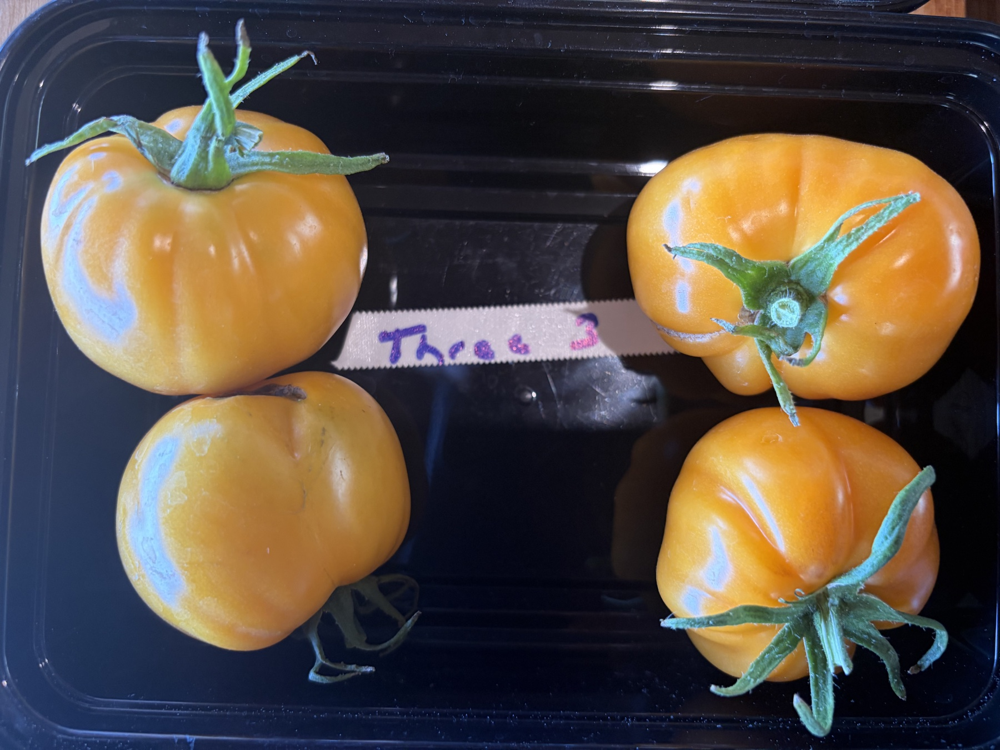
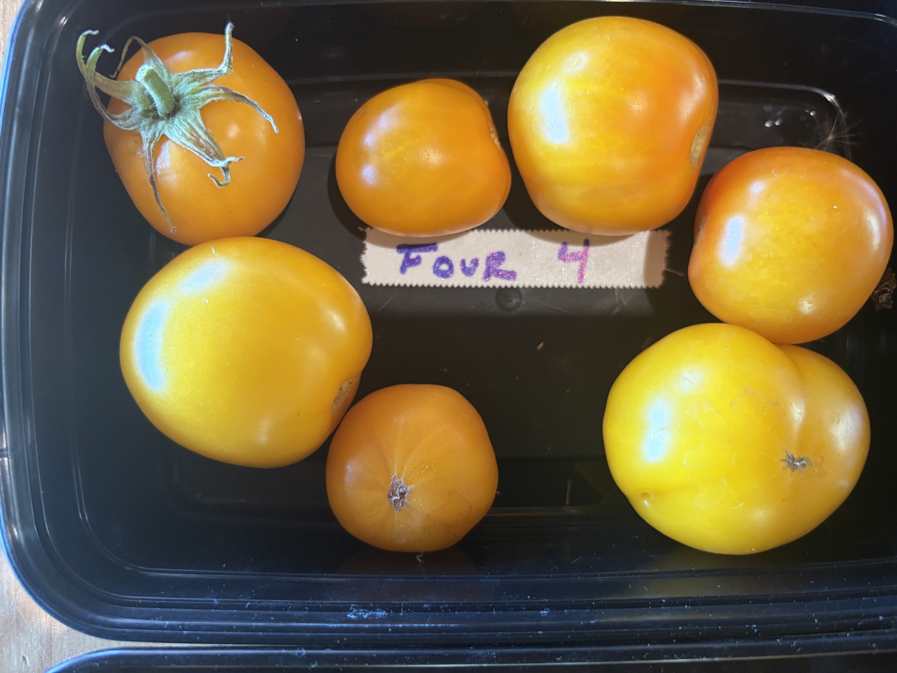
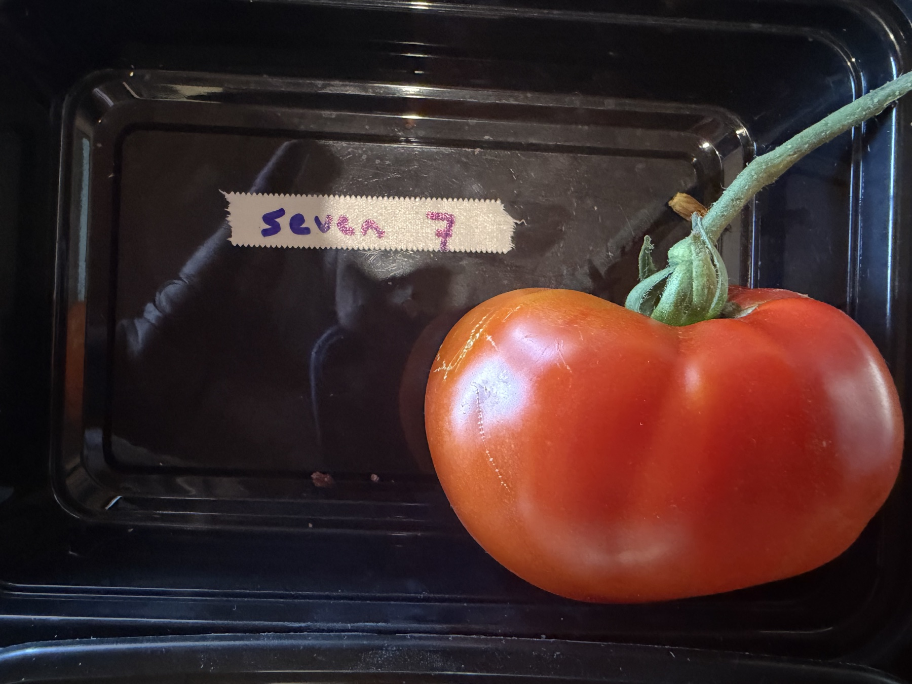
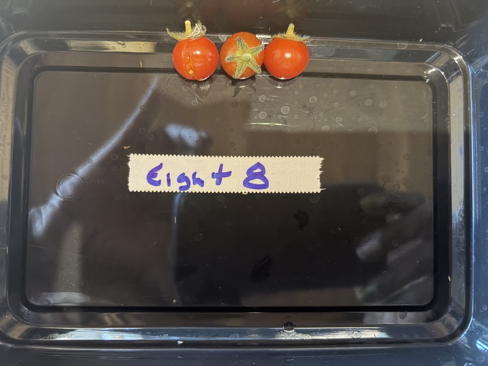
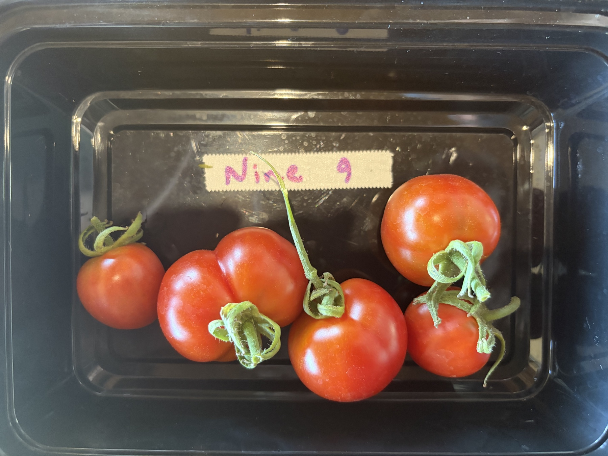

Thirty-two pots create replication across the eleven established varieties.
The multi-month arc
The experiment crossed its first meaningful finish line.
The seedlings began with uneven vigor. By late July, a wide range of varieties had completed the harder biological sequence: establishment, flowering, fruit set, and ripening in a cool coastal garden.
The locked seedling baseline gives each pot a traceable identity.
Every pot in the March 27 run has a human-reviewed variety assignment.
Ten varieties appear in the ready-pick sample with distinct mature fruit traits.
Live tasting room
Four palates. One garden.
T, K, P, and S each have a personal scorecard beside the ten tomatoes. Every card includes the variety's reference flavor profile, a quick rating, flavor words, texture, a grow-again vote, and space for the verdict.
Each scorecard autosaves in that phone's browser. The export button creates the record for later comparison while the four tasters keep independent notes.
What the experiment suggests
Early vigor helped, and recovery mattered just as much.
The July fruit changes the interpretation of the March seedling record. Strong starters often carried their advantage forward. Several mixed or modest starters also reached convincing ripe fruit.
Ripening breadth is the clearest success.
Red, gold, orange, and mahogany fruit all reached mature color. Cherry, round, elongated, and deeply ribbed forms are represented. The site supported more than one narrow “fog-proof” tomato type.
Seedling weakness left room for recovery.
Heinz 9129 began with two modest seedlings and still produced large ripe fruit. Taxi and San Francisco Fog also moved from mixed early establishment to clear July maturity.
Some varieties show clean continuity.
Japanese Black Trifele was strong across its early pots and reached characteristic dark fruit. Azoychka paired a mostly strong seedling cohort with substantial golden fruit.
Replication protected the experiment.
Sasha Altai lost one of its two early plants while the surviving cohort reached ripe fruit. Multiple pots preserved a variety-level result when an individual plant stalled.
The varieties
Ten distinct expressions of the same fog-belt summer.
Each card links the July fruit phenotype to the corrected Phase 1 establishment record. The photos show a ready-pick sample, so the analysis stays focused on maturity, fruit form, and continuity across the experiment.
Series 1
San Francisco Fog
Smooth and ribbed red fruit reached full color. Its early cohort split evenly between strong and modest establishment, making this a persuasive local recovery story.
Mixed start → convincing maturity
Series 3
Iles Yellow Latvian
Golden-orange fruit reached mature color across rounded and lightly ribbed forms. Three strong and two modest early pots point to a generally successful cohort with visible variation.
Broad cohort → mature gold fruit
Series 4
Taxi
The fruit is mostly smooth, rounded, and evenly gold. Taxi began with one strong and one modest seedling, then reached a consistent mature phenotype by July.
Mixed start → consistent fruit form
Series 5
Nikolayev Yellow Cherry
Small golden fruit shows a clear cherry expression and broadly even ripening. Three of its four early pots established strongly, and the July sample carries that early consistency forward.
Strong cohort → uniform cherry phenotype
Series 6
Japanese Black Trifele
Mahogany shoulders and dark red flesh color are visible across the sample. All three early pots established strongly, producing one of the clearest seedling-to-fruit continuity signals in the trial.
Strong start → characteristic mature color
Series 7
Sunset's Red Horizon
The ready fruit shows the variety's large red form. Its four-pot early cohort established strongly, so the July result extends an already favorable biological trajectory.
Strong cohort → large ripe fruit
Series 8
Waimea Wild Cherry
Small red fruit reached ripe color from the trial's only Waimea pot. The result confirms successful maturity while the single-plant sample keeps the broader variety read provisional.
Single strong plant → ripe cherry fruit
Series 9
Sasha Altai
Rounded red fruit confirms that the surviving cohort completed the season's key biological steps. One early pot was strong and one stalled, making Sasha Altai the clearest case for the value of replication.
Partial early loss → successful maturity
Series 11
Azoychka
Large golden fruit and pronounced ribbing make Azoychka one of the strongest visual outcomes. Three strong early pots and one modest pot support a favorable whole-experiment read.
Mostly strong start → substantial ripe fruit
Series 12
Heinz 9129
Large red ribbed fruit emerged from a cohort whose two seedlings were both modest at the Phase 1 lock. Heinz 9129 is the strongest evidence that March vigor alone could not forecast July maturity.
Modest start → large ripe fruitBottom line
The experiment supports a real fog-belt shortlist.
Japanese Black Trifele and Azoychka have the cleanest continuity from early establishment to mature fruit. San Francisco Fog, Taxi, Sasha Altai, and Heinz 9129 add the more interesting finding: a mixed or weak start still allowed successful ripening by July.
Supported by the evidence
Ten varieties reached ripe or near-ripe fruit in the July ready-pick sample. The garden supported several fruit sizes, forms, and mature colors across the same cool coastal site.
Still open for the final season read
Cumulative weight, first-harvest timing, flavor, plant-level attribution, disease pressure, and Gold Dust fruit status remain unmeasured here. Those fields will determine the final Fog Belt Score.